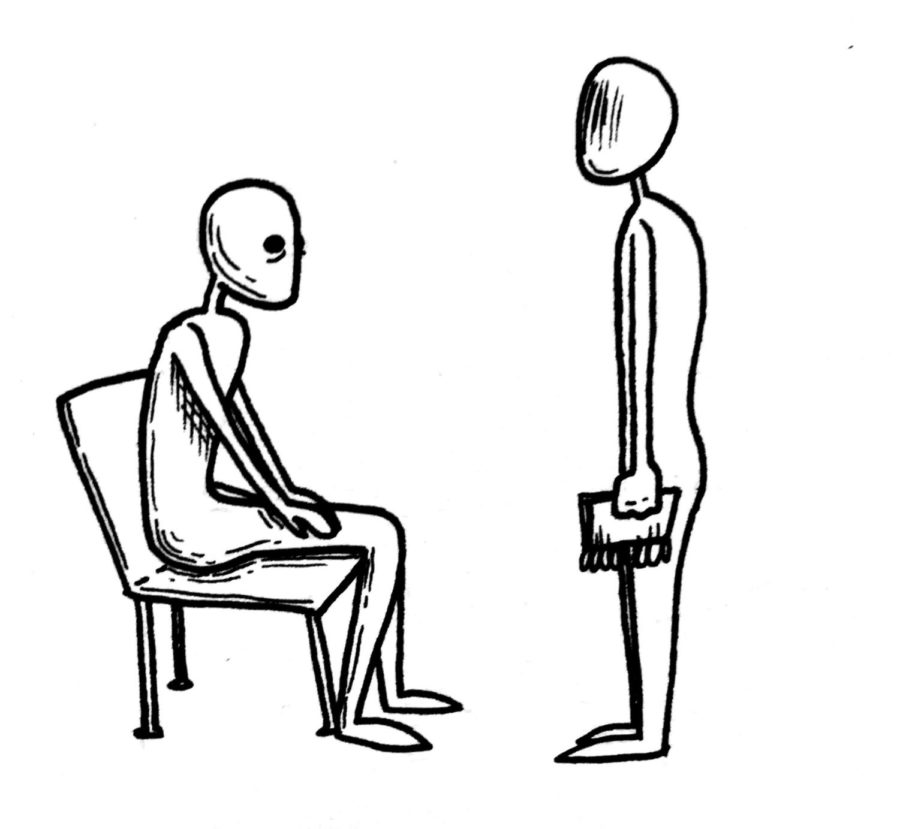

Stories from the Ground Floor of Nordenberg Hall
Stories from the Ground Floor of Nordenberg Hall:
Pitt students discuss their experiences with the UCC

Compiled by
The Pitt News Staff
Illustrations by Eli Savage, Staff Illustrator at The Pitt News
June 14, 2019
Read more about the collaboration between TPN and the PPG